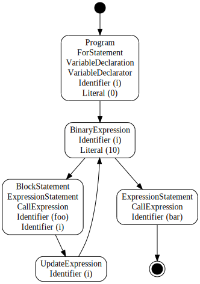
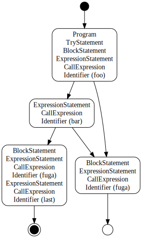
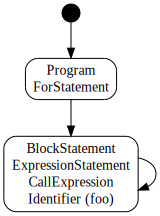

Code Path Analysis Details
ESLint's rules can use code paths. The code path is execution routes of programs. It forks/joins at such as if statements.
if (a && b) {
foo();
}
bar();

Objects
Program is expressed with several code paths. A code path is expressed with objects of two kinds: CodePath and CodePathSegment.
CodePath
CodePath expresses whole of one code path. This object exists for each function and the global. This has references of both the initial segment and the final segments of a code path.
CodePath has the following properties:
id(string) - A unique string. Respective rules can useidto save additional information for each code path.initialSegment(CodePathSegment) - The initial segment of this code path.finalSegments(CodePathSegment[]) - The final segments which includes both returned and thrown.returnedSegments(CodePathSegment[]) - The final segments which includes only returned.thrownSegments(CodePathSegment[]) - The final segments which includes only thrown.currentSegments(CodePathSegment[]) - Segments of the current position.upper(CodePath|null) - The code path of the upper function/global scope.childCodePaths(CodePath[]) - Code paths of functions this code path contains.
CodePathSegment
CodePathSegment is a part of a code path. A code path is expressed with plural CodePathSegment objects, it's similar to doubly linked list. Difference from doubly linked list is what there are forking and merging (the next/prev are plural).
CodePathSegment has the following properties:
id(string) - A unique string. Respective rules can useidto save additional information for each segment.nextSegments(CodePathSegment[]) - The next segments. If forking, there are two or more. If final, there is nothing.prevSegments(CodePathSegment[]) - The previous segments. If merging, there are two or more. If initial, there is nothing.reachable(boolean) - A flag which shows whether or not it's reachable. This becomesfalsewhen preceded byreturn,throw,break, orcontinue.
Events
There are five events related to code paths, and you can define event handlers in rules.
module.exports = function(context) {
return {
/**
* This is called at the start of analyzing a code path.
* In this time, the code path object has only the initial segment.
*
* @param {CodePath} codePath - The new code path.
* @param {ASTNode} node - The current node.
* @returns {void}
*/
"onCodePathStart": function(codePath, node) {
// do something with codePath
},
/**
* This is called at the end of analyzing a code path.
* In this time, the code path object is complete.
*
* @param {CodePath} codePath - The completed code path.
* @param {ASTNode} node - The current node.
* @returns {void}
*/
"onCodePathEnd": function(codePath, node) {
// do something with codePath
},
/**
* This is called when a code path segment was created.
* It meant the code path is forked or merged.
* In this time, the segment has the previous segments and has been
* judged reachable or not.
*
* @param {CodePathSegment} segment - The new code path segment.
* @param {ASTNode} node - The current node.
* @returns {void}
*/
"onCodePathSegmentStart": function(segment, node) {
// do something with segment
},
/**
* This is called when a code path segment was leaved.
* In this time, the segment does not have the next segments yet.
*
* @param {CodePathSegment} segment - The leaved code path segment.
* @param {ASTNode} node - The current node.
* @returns {void}
*/
"onCodePathSegmentEnd": function(segment, node) {
// do something with segment
},
/**
* This is called when a code path segment was looped.
* Usually segments have each previous segments when created,
* but when looped, a segment is added as a new previous segment into a
* existing segment.
*
* @param {CodePathSegment} fromSegment - A code path segment of source.
* @param {CodePathSegment} toSegment - A code path segment of destination.
* @param {ASTNode} node - The current node.
* @returns {void}
*/
"onCodePathSegmentLoop": function(fromSegment, toSegment, node) {
// do something with segment
}
};
};
About onCodePathSegmentLoop
This event is always fired when the next segment has existed already. That timing is the end of loops mainly.
For Example 1:
while (a) {
a = foo();
}
bar();
First, the analysis advances to the end of loop.
Second, it creates the looping path. At this time, the next segment has existed already, so the
onCodePathSegmentStartevent is not fired. It firesonCodePathSegmentLoopinstead.Last, it advances to the end.

For example 2:
for (let i = 0; i < 10; ++i) {
foo(i);
}
bar();
forstatements are more complex. First, the analysis advances toForStatement.update. Theupdatesegment is hovered at first.
Second, it advances to
ForStatement.body. Of course thebodysegment is preceded by thetestsegment. It keeps theupdatesegment hovering.Third, it creates the looping path from
bodysegment toupdatesegment. At this time, the next segment has existed already, so theonCodePathSegmentStartevent is not fired. It firesonCodePathSegmentLoopinstead.
Fourth, also it creates the looping path from
updatesegment totestsegment. At this time, the next segment has existed already, so theonCodePathSegmentStartevent is not fired. It firesonCodePathSegmentLoopinstead.
Last, it advances to the end.

Usage Examples
To check whether or not this is reachable
var last = require("lodash").last;
function isReachable(segment) {
return segment.reachable;
}
module.exports = function(context) {
var codePathStack = [];
return {
// Stores CodePath objects.
"onCodePathStart": function(codePath) {
codePathStack.push(codePath);
},
"onCodePathEnd": function(codePath) {
codePathStack.pop();
},
// Checks reachable or not.
"ExpressionStatement": function(node) {
var codePath = last(codePathStack);
// Checks the current code path segments.
if (!codePath.currentSegments.some(isReachable)) {
context.report({message: "Unreachable!", node: node});
}
}
};
};
See Also: no-unreachable, no-fallthrough, consistent-return
To check state of a code path
This example is checking whether or not the parameter cb is called in every path. Instances of CodePath and CodePathSegment are shared to every rule. So a rule must not modify those instances. Please use a map of information instead.
var last = require("lodash").last;
function hasCb(node, context) {
if (node.type.indexOf("Function") !== -1) {
return context.getDeclaredVariables(node).some(function(v) {
return v.type === "Parameter" && v.name === "cb";
});
}
return false;
}
function isCbCalled(info) {
return info.cbCalled;
}
module.exports = function(context) {
var funcInfoStack = [];
var segmentInfoMap = Object.create(null);
return {
// Checks `cb`.
"onCodePathStart": function(codePath, node) {
funcInfoStack.push({
codePath: codePath,
hasCb: hasCb(node, context)
});
},
"onCodePathEnd": function(codePath, node) {
funcInfoStack.pop();
// Checks `cb` was called in every paths.
var cbCalled = codePath.finalSegments.every(function(segment) {
var info = segmentInfoMap[segment.id];
return info.cbCalled;
});
if (!cbCalled) {
context.report({
message: "`cb` should be called in every path.",
node: node
});
}
},
// Manages state of code paths.
"onCodePathSegmentStart": function(segment) {
// Ignores if `cb` doesn't exist.
if (!last(funcInfoStack).hasCb) {
return;
}
// Initialize state of this path.
var info = segmentInfoMap[segment.id] = {
cbCalled: false
};
// If there are the previous paths, merges state.
// Checks `cb` was called in every previous path.
if (segment.prevSegments.length > 0) {
info.cbCalled = segment.prevSegments.every(isCbCalled);
}
},
// Checks reachable or not.
"CallExpression": function(node) {
var funcInfo = last(funcInfoStack);
// Ignores if `cb` doesn't exist.
if (!funcInfo.hasCb) {
return;
}
// Sets marks that `cb` was called.
var callee = node.callee;
if (callee.type === "Identifier" && callee.name === "cb") {
funcInfo.codePath.currentSegments.forEach(function(segment) {
var info = segmentInfoMap[segment.id];
info.cbCalled = true;
});
}
}
};
};
See Also: constructor-super, no-this-before-super
Code Path Examples
Hello World
console.log("Hello world!");

IfStatement
if (a) {
foo();
} else {
bar();
}

IfStatement (chain)
if (a) {
foo();
} else if (b) {
bar();
} else if (c) {
hoge();
}
SwitchStatement
switch (a) {
case 0:
foo();
break;
case 1:
case 2:
bar();
// fallthrough
case 3:
hoge();
break;
}

SwitchStatement (has default)
switch (a) {
case 0:
foo();
break;
case 1:
case 2:
bar();
// fallthrough
case 3:
hoge();
break;
default:
fuga();
break;
}

TryStatement (try-catch)
try {
foo();
if (a) {
throw new Error();
}
bar();
} catch (err) {
hoge(err);
}
last();
It creates the paths from try block to catch block at:
throwstatements.- The first throwable node (e.g. a function call) in the
tryblock. - The end of the
tryblock.

TryStatement (try-finally)
try {
foo();
bar();
} finally {
fuga();
}
last();
If there is not catch block, finally block has two current segments. At this time, CodePath.currentSegments.length is 2. One is the normal path, and another is the leaving path (throw or return).

TryStatement (try-catch-finally)
try {
foo();
bar();
} catch (err) {
hoge(err);
} finally {
fuga();
}
last();

WhileStatement
while (a) {
foo();
if (b) {
continue;
}
bar();
}

DoWhileStatement
do {
foo();
bar();
} while (a);
ForStatement
for (let i = 0; i < 10; ++i) {
foo();
if (b) {
break;
}
bar();
}

ForStatement (for ever)
for (;;) {
foo();
}
bar();

ForInStatement
for (let key in obj) {
foo(key);
}

When there is a function
function foo(a) {
if (a) {
return;
}
bar();
}
foo(false);
It creates two code paths.
The global's

The function's